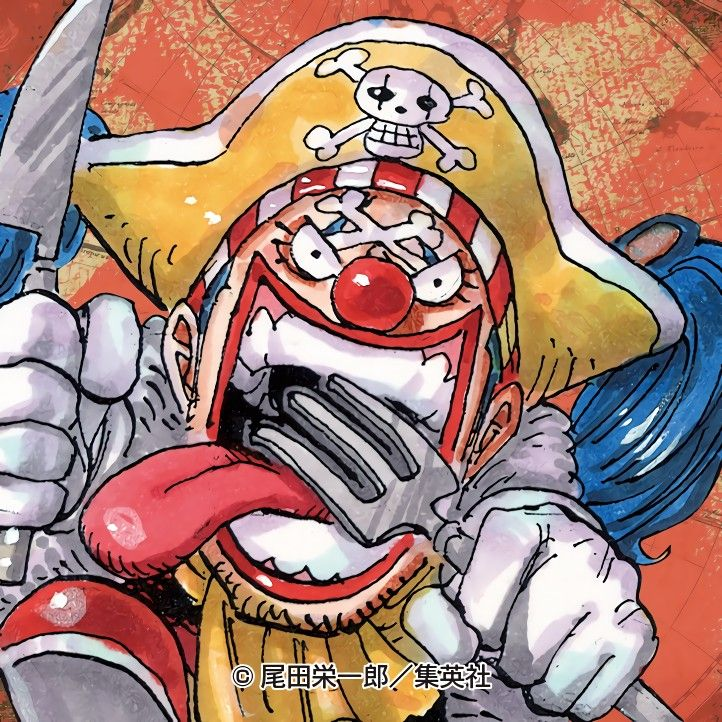
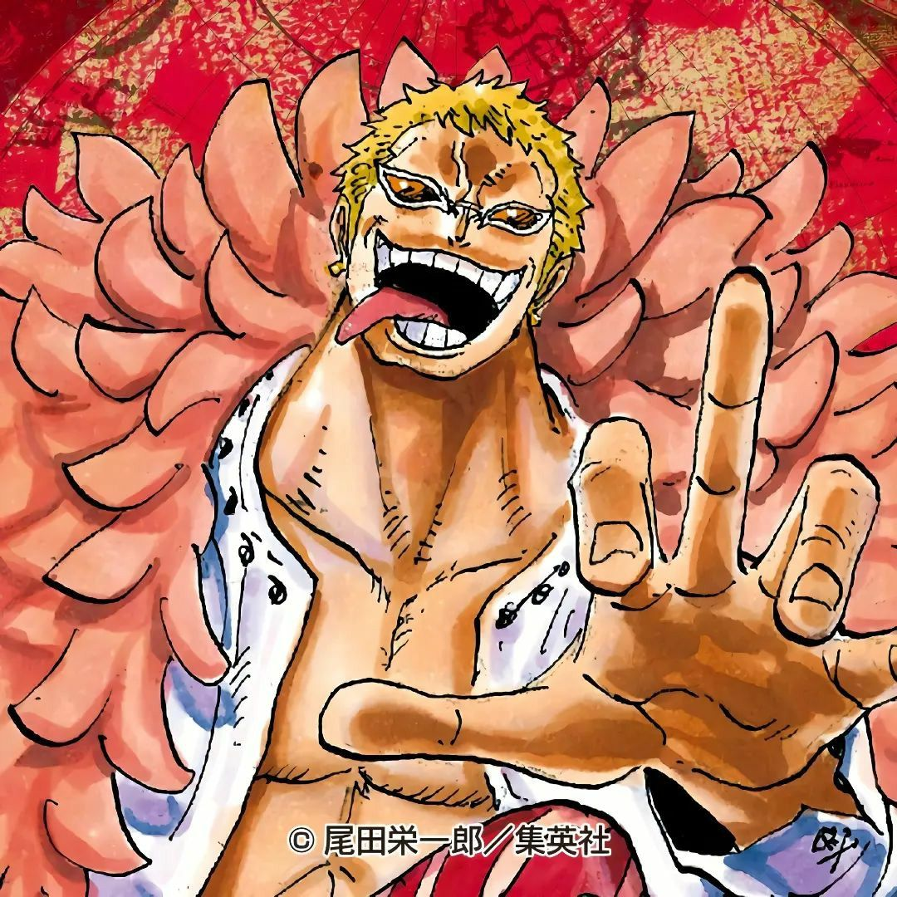
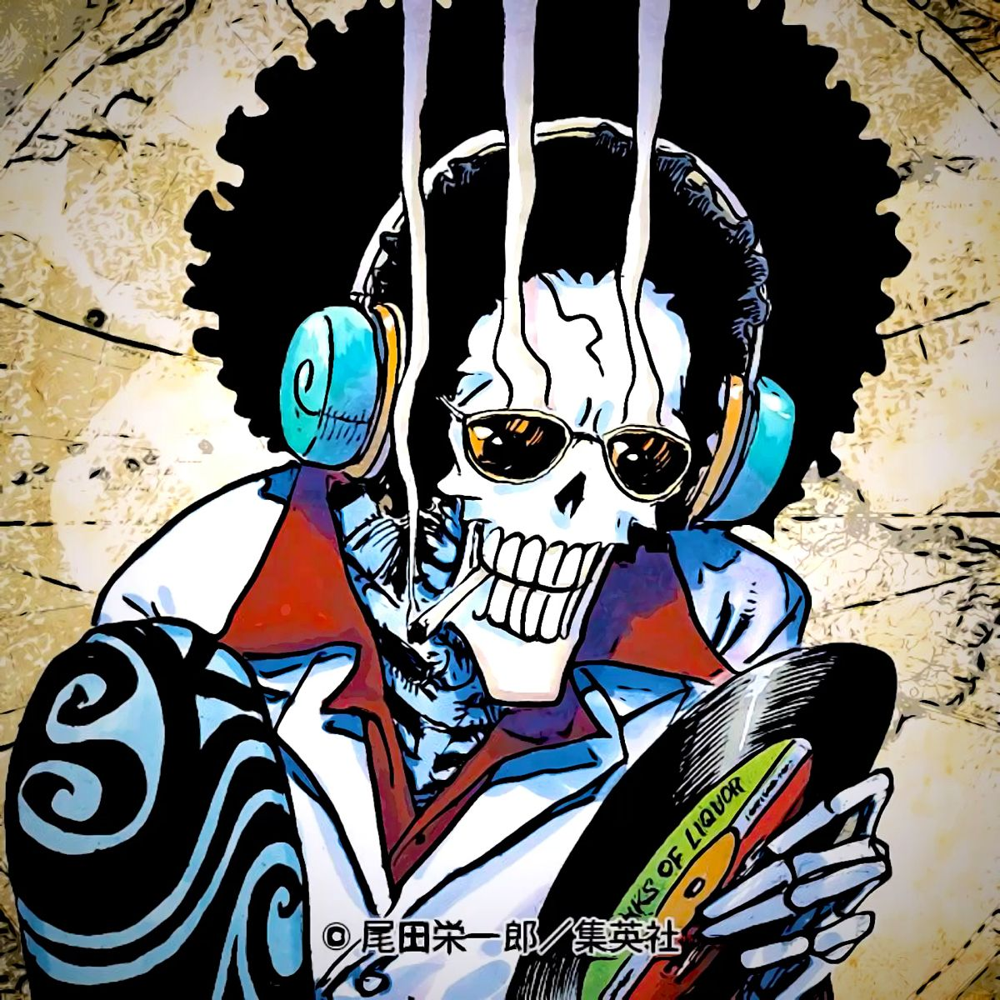
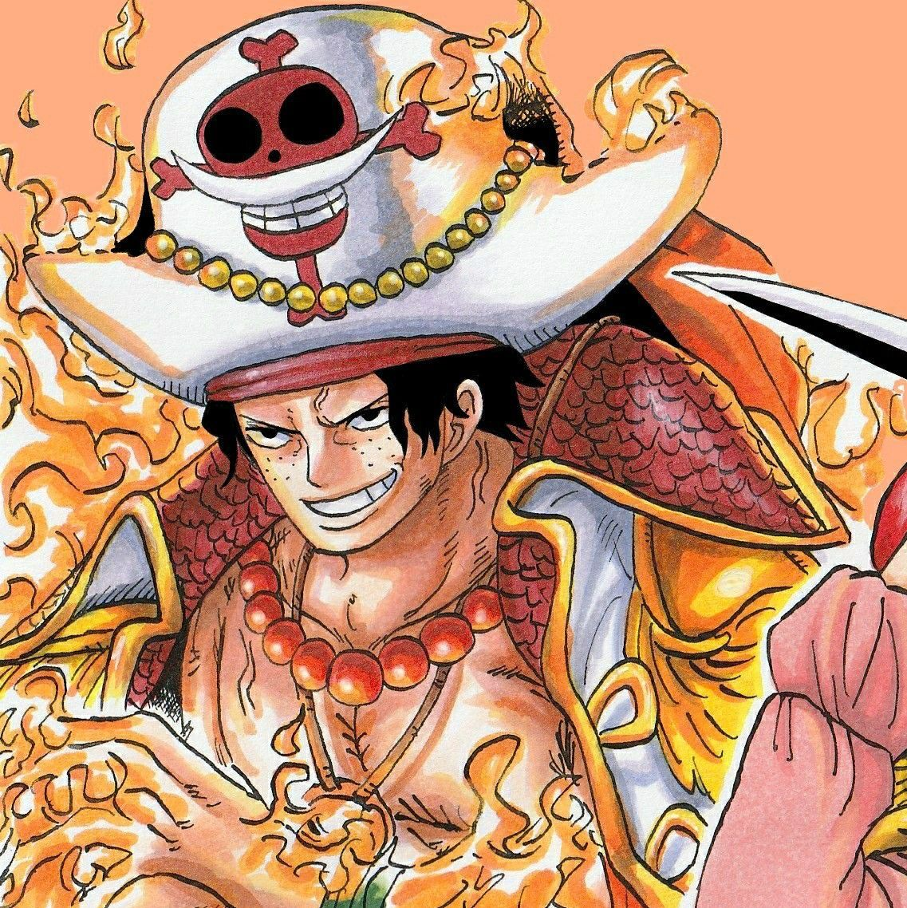
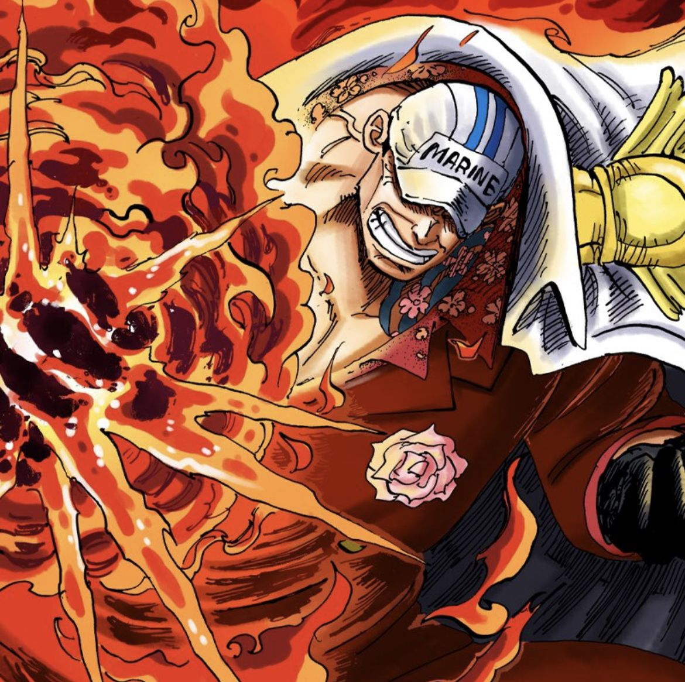
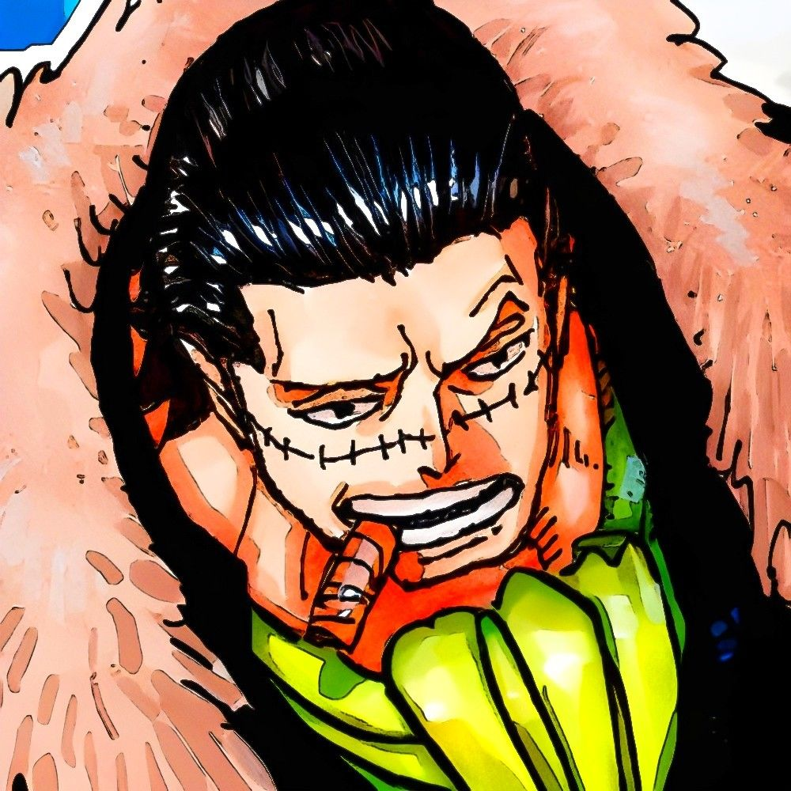
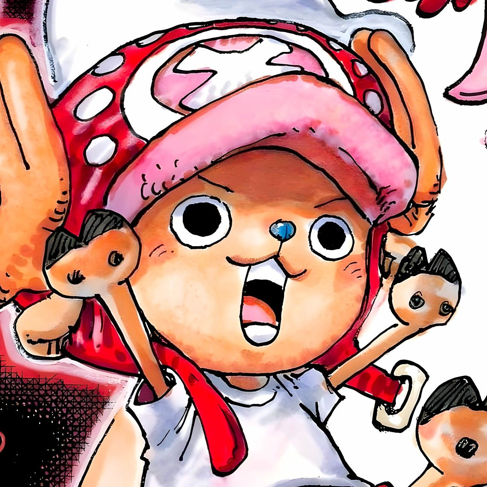
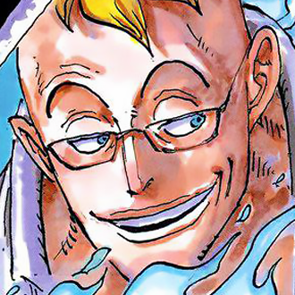
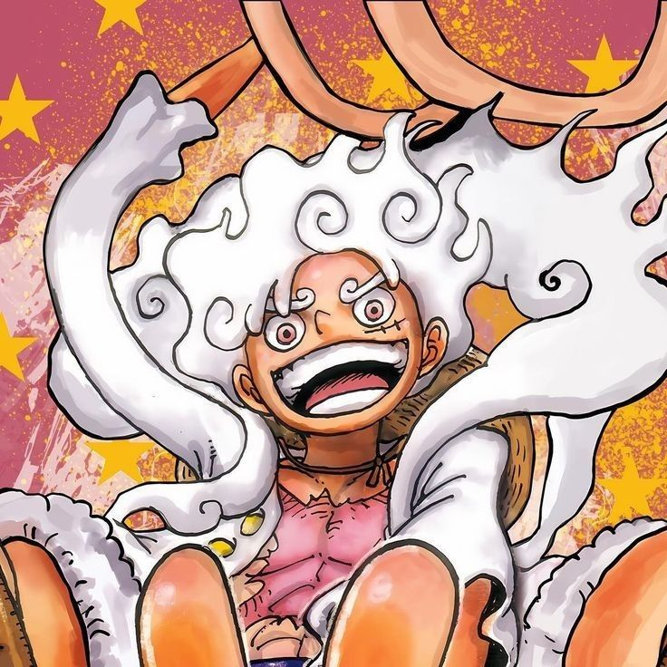

Dizem que os frutos são a encarnação de demônios dos mares, por isso uma pessoa que os come perde seus poderes e sua força quando estiver submerso no mar, ficando como que ‘paralisado’.
Para anular os poderes existe também a “Kairouseki” (a tradução mais próxima seria “Pedra do Mar”) que é uma pedra que tem as mesmas propriedades do mar. O quartel General da Marinha tem prisões feitas com esse material para anular os poderes de criminosos portadores de ‘Akuma no Mi’.
Existem mais de 100 tipos de “Frutos do Diabo”, e é na “Grand Line” onde existem mais pessoas utilizando seus poderes, por isso a maioria das pessoas acreditam que a existência dos frutos não passa de apenas um mito.
Fatos sobre as “Akuma no Mi”:
Objetos e animais também podem comer. O gosto da fruta é extremamente ruim, semelhante a bosta. Somente uma pessoa pode adquirir o poder do fruto. Assim que alguém dá uma mordida essa pessoa já adquire os poderes, caso mais pessoas tentem comer o resto da fruta elas não irão adquirir poder algum. Só é possível para um individuo comer um fruto, pois a força de duas “maldições” destruiria o corpo do portador. Os frutos também se dividem em três famílias/grupos/tipos (Kei), são elas:
A nomeação ‘Paramecia’ foi introduzida na série recentemente, mas a confirmação de que isso era o nome de uma classe de ‘Akuma no Mi’ deu-se apenas mais tarde, através de uma SBS na qual Eichiiro Oda explicou todos os frutos. Os frutos ‘Paramecia’ (os Kanji usados para escrever ‘paramecia’ significam ‘super humano’) são os que fornecem a habilidade de alterar a estrutura corpórea, mas mantendo os próprios limites da estrutura. Durante muito tempo se achou que os poderes dos “Paramecia” eram apenas de modificação corporal, porem poderes que não derivam dessas mudanças também se encaixam nessa categoria.
Abaixo as Akumas que pertencem a esse Kei:
Nome
Usuário
Descrição
Bara Bara no Mi
Buggy
Buggy acidentalmente comeu a Bara Bara no Mi, uma Akuma no Mi de classe Paramecia que o permite separar suas partes do corpo e controlá-las independente de qual for...
Ito Ito no Mi
Doflamingo
Ito Ito no Mi é uma Akuma no Mi do tipo Paramecia que permite ao seu usuário criar e manipular fios extremamente finos ao olho nú.
Yomi Yomi no Mi
Brook
A Yomi Yomi no Mi é uma Akuma no Mi tipo Paramecia, que permite ao usuário voltar à vida depois de morrer.
A nomeação ‘Logia’ foi introduzida na série recentemente. São frutos que dão a habilidade de transformar completamente o corpo em elementos da natureza a quem os come tornando-os invulneráveis a maioria dos ataques por este e alguns outros motivos que esse tipo de fruto é o mais poderoso de todos.
Abaixo as Akumas que pertencem a esse Kei:
Nome
Usuário
Descrição
Mera Mera no Mi
Ace
Ace comeu a Mera Mera no Mi, uma Akuma no Mi do tipo Logia que lhe permitiu criar, controlar e transformar seu corpo em fogo.
Magu Magu no Mi
Akainu
Akainu comeu uma Akuma no Mi da classe Logia, Magu Magu no Mi, a fruta da magma que dá o poder de controlar, se transformar e produzir magma.
Suna Suna no Mi
Crocodile
Crocodile comeu a Suna Suna no Mi, uma Akuma no Mi do tipo Logia que permite que ele se torne, gerencie e manipule areia.
A nomeação ‘Zoan’ vem de ‘Zoanthropy’ que em inglês, é um termo usado para definir um humano que acredita poder se transformar em algum animal. São aqueles frutos que dão poderes de transformação animal a quem os come, assim a pessoa consegue assumir 3 formas: A Pessoa Normal; Meio Humano – Meio Animal; Completamente Transformado em Animal. Neste tipo existem frutos iguais, mas com modelos (Model) diferentes pois o nome de alguns são onomatopéias utilizadas em mangas.
Abaixo as Akumas que pertencem a esse Kei:
Nome
Usuário
Descrição
Hito Hito no Mi
Chopper
Chopper é uma rena que, após comer a Hito Hito no Mi, adquiriu a habilidade de se transformar e raciocinar como os humanos.
Tori Tori no Mi
Marco
Marco comeu a Tori Tori no Mi, Modelo: Fênix, uma Akuma no Mi do tipo Zoan Mítica (portanto, mais raro que Logia) que permite que ele se transforme em uma grande fênix de chama azul, a fonte de seu apelido "Marco, a Fênix".
Hito Hito no Mi
Luffy
Hito Hito no Mi, Modelo: Nika, é uma Akuma no Mi do tipo Zoan Mítica que permite ao usuário se transformar no lendário "Deus do Sol" Nika e ganhar seus atributos, notavelmente um corpo com propriedades da borracha.